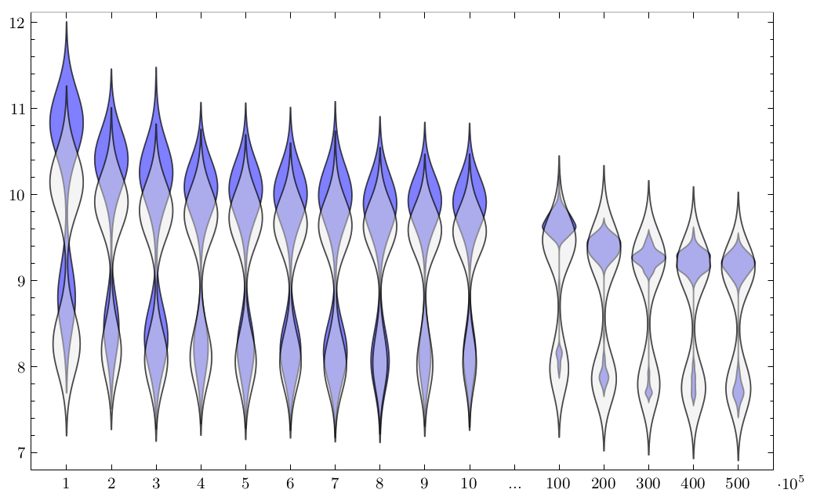

Engineering Java 7’s Dual-Pivot Quicksort Using MaLiJAn
Based on the analysis of instruction counts (see details in my master’s thesis) one should expect that asymmetric pivot sampling improves YBB Quicksort. In this paper we empirically investigate this hypothesis in Java.
In fact, Vladimir Yaroslavskiy made the observation that asymmetry might help already in 2010, when he experimented with YBB Quicksort. In this mailing list post he asked for explanations why from 5 sample elements, exactly the smallest and third smallest elements perform best, and in particular better than the tertiles (second and forth smallest).
Dmytro Sheyko’s answer goes in the right direction: asymmetries in the partitioning algorithm may lead to improvements with asymmetric pivots. The details of his explanation are not correct because of simplifying assumptions; he closes with:
Of course, these consideration does not apply to the real DPQ completely. This is because in real DPQ every item is not compared with pivots in well defined order and real DPQ contains numerous special cases, which make it harder to analyze.
Still, we could finally give this analysis: [conference paper] / [full paper].
While we can confirm savings in the number of executed Java Bytecode instructions, running times show a peculiar pattern:

There seem to be two types of inputs, where running time is either in the lower (faster) part or in the upper (slower) part, depending on the class of the input. We investigate this phenomenon in detail and trace it to Java’s just-in-time (JIT) compiler.
With regard to the initial hypothesis, we have to conclude that any potential speedup is dwarfed by these JITter effects.
MaLiJAn
For the experiments we used our self-made tool MaLiJAn, the Maximum Likelihood Java Analyzer (I know, great name).
It decomposes a given Java program into its control-flow graph and injects counting instructions at the beginning of each basic block (i.e. each node in that graph). From these basic-block execution counters determined on given data, MaLiJAn tries to extrapolate behavior for any input size. That step has to remain a heuristic, of course, but for many typical algorithms and inputs we tried, it worked quite reasonably.
Finally, MaLiJAn computes expected costs from these extrapolations, based on user-specified cost measures, which assign a constant cost contribution to each execution of a basic block.
The theoretical basis of MaLiJAn is described in this article; it is also sketched in the appendix of this paper, where we extend MaLiJAn to approximate average running times for executing a single basic block.
Relation to Other Papers
We could confirm some of the empirical findings of this paper analytically.